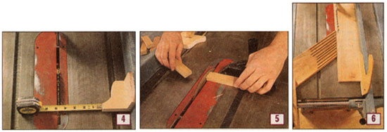

ERIC O'CONNELL
Measure from the blade to the block (photo 4) and secure the fence. Clamp the stop block to the fence near the front of the table (photo 5), so that you can reference the wood for the cut without anything pushing the cut piece into the back of the blade. Feather boards (photo 6) are handy to help hold the wood against the fence.